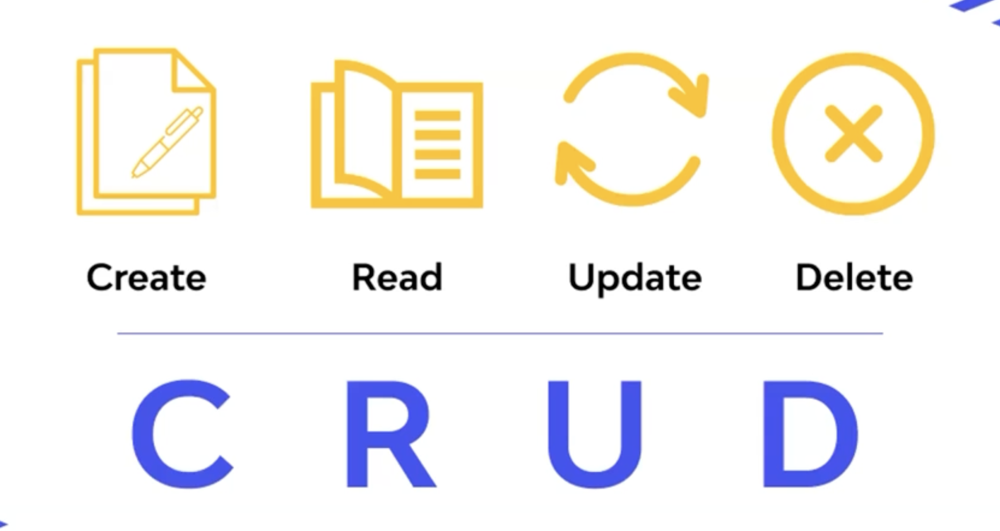
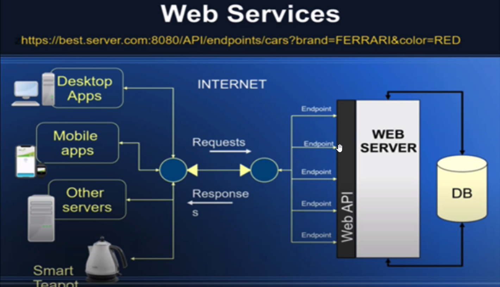

API
Тестовые API
- Swapi -
https://swapi.py4e.com - REQRES -
https://reqres.in/ - Список университетов -
http://universities.hipolabs.com/search?name=middle&country=Turkey - GraphQL and REST API for Testing and Prototyping -
https://gorest.co.in/public/v2/users - fakestoreapi.com/ - для e-commerce приложений
- jsonplaceholder api
- json-to-typescript
XMLHttpRequest
Подробнее про сигнатуру этого объекта и его методы расскажут:
Fetch API
- Метод fetch;
- AbortController;
- Axios — модифицированный и более сложный аналог Fetch API;
- Интересное сравнение fetch и axios.
Application Programming Interface - интерфейс программы, который обеспечивает связь и обмен данными между клиентами и отдельными системами.
Одна API может обращаться сама к себе или к другим сторонним API. API может быть открытой (доступной) или зак�рытой.
Разрабатывается серверными разработчиками на серверных языках программирования таких как:
- Java
- Pyton
- Nodejs
- PHP
- Ruby и др.
REST-API - АРХИТЕКТУРНЫЙ СТИЛЬ. более гибкий, независимый, json (более популярный), также может работать с xml, text, html. Архитектурный стиль.
- Меньше символов в json.
- Хорошо кешируемый
- Простота кодирования
- Менее безопасный
- RESTFull - если придерживаться все правил REST
- Более быстрый
SOAP-API - ПРОТОКОЛ. simple object access protocol, реализация через xml-файлы конфиги (уже устаревший). Вид протокола. Много лишних символов в xml.
- Более безопасный
- Только XML-файлы с WSDL (язык описания веб-сервисов и доступа к ним, основанный на языке XML)
- Тяжело маштабируется, жэсткие требования к разработке.
BASE URL / API URL - корневой url, на котором хранится API.
CRUD

4 базовые функции API. Create, read, update, delete.
API-cервисы
Независимые программные компоненты, отдельные модули одной большой системы. Весь большой бэкенд может разбиваьтся на веб-вервисы.
Веб-cервисы

Общедоступные сервисы с открытым API, к которому можно обращаться с любого клиента.
Коллекции (эндпоинты)
Списки данных коллекций API.
Админ-панель
Панель управления коллекциями данных. Мониторинг и редактирование данных. Может быть отдельным под-приложением API.
Функциональность API для пользователя
- Регистрация
- Авторизация
- Сброс пароля
- Личный кабинет
- Онлайн оплата
Хостинг
- Обычный ограниченный хостинг (меньше свободы)
- Виртуальная машина (больше свободы), несколько % от мощности и памяти
- Выделенный сервер (вся машина)
- Хостинг-панель - панель управления хостинга (под определенный язык программирования, cPanel - хорошая)
- Бесплатный хостинг
- SSL-сертификат - secure socket layer. Стороняя организация. Для Https
- UP-time
Деплой и поддержка
- Поддержка хостинга
- DevOps делай deploy-cli
- Jenkins
- Репозиторий